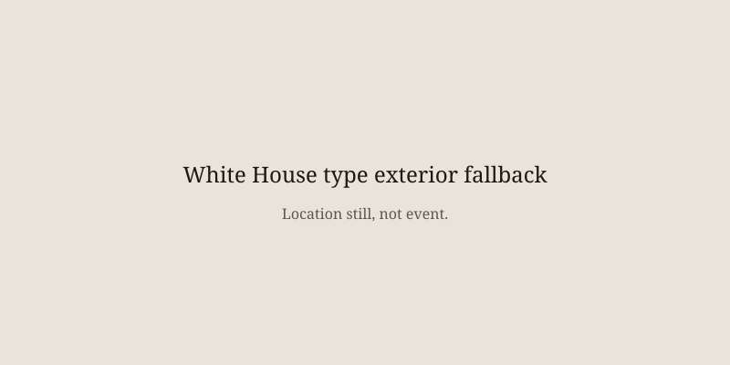

United States · diplomacy · 16 November 2026
China confirms first face-to-face meeting of Xi, Trump and Putin will take place Thursday in Shenzhen.

What is agreed across desks
China’s Foreign Ministry confirmed on 16 November that President Xi Jinping will meet U.S. President Donald Trump and Russian President Vladimir Putin on Thursday, 19 November, in Shenzhen during the APEC leaders’ meeting. Spokesperson Mao Ning described the gathering as the first face-to-face meeting of the three heads of state and said it would be of groundbreaking significance for world peace and strategic stability. The White House has said Trump intends to raise the reduction of nuclear weapons and issues related to the conflict involving Iran. Officials have stated they do not expect a formal agreement and have indicated that Ukraine is not expected to be the central topic from the U.S. side. Putin is understood to have proposed the trilateral format earlier.
Trump departed for Asia on Monday, with stops that include the Philippines for ASEAN before China. The meeting occurs after midterm election results that reduced Republican seats in Congress. No public, pre-agreed detailed agenda has been released by any of the three capitals.
What is only a quote
Mao Ning’s phrase “groundbreaking significance” is a diplomatic characterization. It is not a prediction of outcomes. White House statements about what Trump will raise are statements of intent. They are not evidence that China or Russia has agreed to discuss nuclear numbers on U.S. terms. Speculation that the meeting will settle the Ukraine war or produce a new Yalta-style division of spheres is commentary, not a scheduled agenda item.
Mechanism a reader needs
The United States and Russia together hold the large majority of the world’s nuclear warheads. China’s arsenal is smaller but has been expanding. Previous arms-control treaties (New START and its predecessors) were bilateral U.S.-Russia instruments; China has consistently declined to join them while its numbers remain lower. A trilateral discussion, even without a treaty, would be a procedural novelty. Whether it produces data exchanges, a joint statement, or nothing beyond a photograph is a future fact.
APEC itself is a trade and economic forum. Hosting a high-politics trilateral on its sidelines is a host-country choice that gives China the ability to set protocol and optics. The absence of a fixed agenda, reported by the Financial Times and others, is itself a data point: the three capitals have not yet converged on a single negotiating text.
What this story is not
It is not a completed nuclear-arms agreement. It is not a U.S. concession on Taiwan or on Ukraine. It is not evidence that any leader has changed a long-standing position. The photograph is a type exterior of the White House; it does not depict any of the three leaders or the Shenzhen venue.

Source articles and scores
Hero attempts Commons Special:FilePath of a White House exterior. Captions state type/location versus event. Local SVG fallback committed. No partisan crop used.